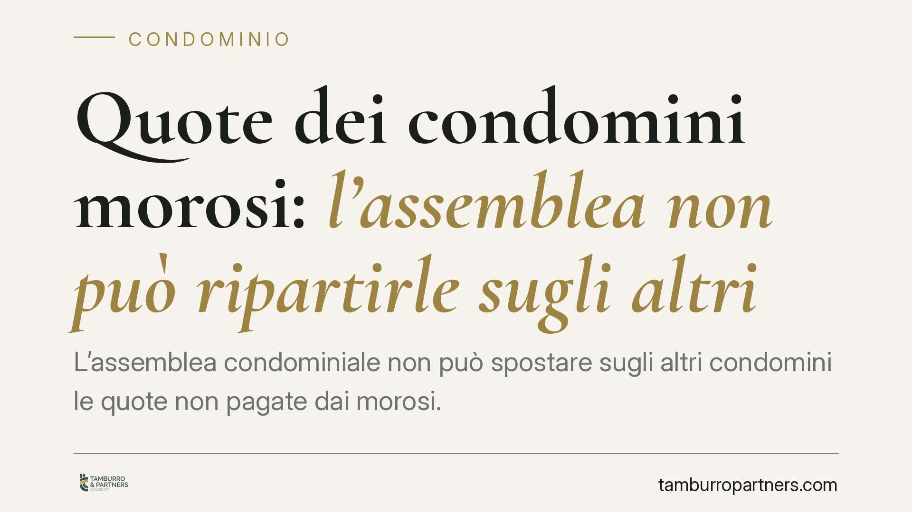

Quote dei condomini morosi: l'assemblea non può ripartirle sugli altri
L'assemblea condominiale non può spostare sugli altri condomini le quote non pagate dai morosi. Il principio tocca un nodo ricorrente nella gestione dei bilanci: chi resta scoperto quando qualcuno non versa. La questione intreccia i criteri legali di riparto, i limiti del potere assembleare e gli strumenti concreti per recuperare il credito senza penalizzare chi è in regola.

Il problema
Un condomino non paga. Il bilancio resta scoperto, le spese correnti vanno comunque sostenute e qualcuno, in assemblea, propone di dividere l'importo mancante tra tutti gli altri. È una scorciatoia diffusa, ma giuridicamente fragile.
Il punto è semplice: nessun condomino può essere obbligato a pagare, oltre alla propria quota, anche quella del vicino inadempiente. La solidarietà tra condomini non opera in questo senso.
Inquadramento normativo
Il criterio di riparto è fissato dall'art. 1123 c.c.: le spese si dividono in proporzione al valore della proprietà di ciascuno, salvo diversa convenzione o criteri legati all'uso. Questo criterio è il parametro di legittimità delle delibere di ripartizione.
Una delibera che addossa ai condomini in regola la quota dei morosi altera, in concreto, questo schema. Sul piano dei vizi occorre però distinguere, seguendo l'indirizzo delle Sezioni Unite (Cass. Sez. Un. 4806/2005, *da verificare nella portata applicativa ai casi odierni*):
- è nulla la delibera che modifica in via generale e permanente i criteri legali di riparto, o che incide su diritti individuali dei singoli;
- è annullabile quella che, pur applicando i criteri corretti, li applica male nel caso concreto.
La distinzione non è teorica. Dalla qualificazione dipende il regime di impugnazione: la delibera annullabile va contestata entro 30 giorni (art. 1137 c.c.) dalla deliberazione, per i presenti dissenzienti e astenuti, o dalla comunicazione del verbale per gli assenti; la nullità, invece, può essere fatta valere senza quel termine. Prima di promuovere un'azione conviene quindi inquadrare con esattezza il tipo di vizio, perché un'impugnazione tardiva su una delibera solo annullabile è destinata a fallire.
La gestione dell'insolvenza
Se la quota del moroso non si può scaricare sugli altri, come si copre la spesa? Lo strumento tipico è il recupero del credito verso l'inadempiente. L'art. 63 disp. att. c.c. consente all'amministratore di ottenere un decreto ingiuntivo immediatamente esecutivo sulla base dello stato di ripartizione approvato.
La riforma del condominio (L. 220/2012) ha inoltre introdotto una tutela per i creditori e un ordine di aggressione: i creditori del condominio devono, in linea di massima, agire prima nei confronti dei condomini morosi e solo dopo nei confronti di quelli in regola (*formulazione da verificare nel testo vigente*). È un assetto che conferma la logica di fondo: l'onere dell'insolvenza grava anzitutto su chi non ha pagato.
Quanto al fondo cassa destinato a coprire temporaneamente l'ammanco, serve prudenza. Obbligare il singolo a versare somme ulteriori rispetto alla propria quota richiede il suo consenso: nessuno può essere costretto, a maggioranza, a finanziare il debito altrui. Diverso è il caso di una contribuzione volontaria o di un fondo di riserva deliberato secondo le regole ordinarie, che non trasforma però il versamento in un obbligo definitivo di accollarsi la morosità. In sintesi: un conto è anticipare per non bloccare la gestione, altro è ridistribuire stabilmente il debito.
Implicazioni pratiche
Per l'amministratore: una delibera che riparte le quote morose sugli altri è esposta a contestazione e può generare responsabilità gestionale. Meglio attivare per tempo gli strumenti di recupero.
Per il condomino in regola: non è tenuto a coprire il debito del vicino. Se l'assemblea delibera in tal senso, può reagire, ma deve verificare entro quali termini e con quale fondamento.
Per il condomino moroso: l'inadempimento non si diluisce sugli altri e resta aggredibile con decreto ingiuntivo esecutivo.
Cosa fare in concreto
- Verificate il verbale: controllate se la delibera modifica i criteri di riparto o si limita a una contribuzione straordinaria, perché da qui dipende il regime del vizio.
- Rispettate i tempi: per le delibere annullabili il termine è di 30 giorni; non lasciatelo decorrere se intendete contestare.
- Attivate il recupero del credito: l'amministratore solleciti formalmente il moroso e, in mancanza di pagamento, valuti il decreto ingiuntivo ex art. 63 disp. att. c.c.
- Non deliberate accolli forzati: evitate decisioni che obblighino i condomini in regola a versare oltre la propria quota.
- Documentate tutto: stato di ripartizione approvato, solleciti e comunicazioni sono la base probatoria di ogni azione.
Un esame preliminare del caso concreto consente di scegliere lo strumento più adeguato, tenendo conto delle circostanze specifiche del singolo condominio.
Ogni condominio ha una storia a sé.
Se gestisci un'amministrazione e vuoi un confronto su una specifica questione condominiale, scrivi allo studio. Ti rispondiamo entro un giorno lavorativo.